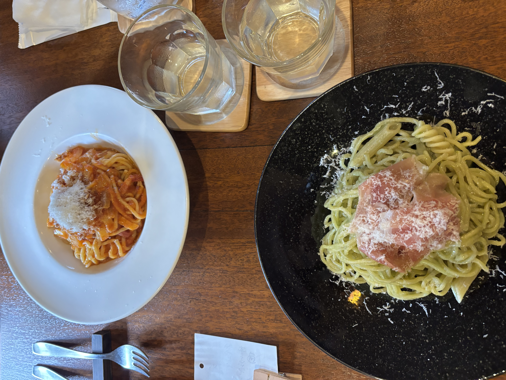

← 一覧
生ハムとバジルの生パスタ
この材料・作り方は写真と料理名からの推定です。実際に作って調整してください。
- 訪問日
- 2026年4月19日
- 店名
- —
- カテゴリ
- パスタ

説明
黒い大皿にたっぷり盛られた、バジルソースを絡めた自家製の太めの生パスタ。上に生ハムをのせ、パルミジャーノをたっぷり削りかけた一皿。手前の小皿はトマトソースの生パスタ（別皿の少量サイズ）。もちもちの自家製麺が主役の店。
材料（2人分）
- 生パスタ（フェットチーネ〜太麺）200g
- 生ハム6〜8枚
- バジルの葉30g
- パルミジャーノ・レッジャーノ30g＋仕上げ用
- 松の実（またはカシューナッツ）15g
- にんにく1/2かけ
- エキストラバージンオリーブオイル60ml
- 塩適量
- 粗挽き黒こしょう適量
作り方
- バジル、松の実、にんにく、パルミジャーノ、オリーブオイル、塩少々をミキサーで撹拌し、バジルソースを作る。
- たっぷりの湯を沸かし、1%の塩を加えて生パスタを表示時間ゆでる。
- ボウルにバジルソースと、ゆで汁を大さじ2ほど入れて混ぜる。
- 湯を切ったパスタを加え、手早く和えて乳化させる。
- 皿に盛り、生ハムをふんわりのせ、パルミジャーノと黒こしょうを削りかける。